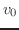
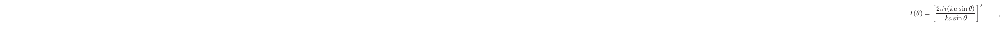
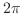
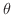

A Brief Overview
of Electromagnetic Theory
The characterization of light sources is essential for any optical imaging application. Like sound, light can be described as a wave phenomenon: a solution to the differential wave equation. This time, the wave equation derives from the differential form of Maxwell's equations for free space. This model is known as the Classical model, and we will largely content ourselves with this oversimplification, just as we did for acoustics earlier in this document. The vector formulation of Maxwell's equations is concisely descriptive: [15, p. 44]
Above, and are vectors with and  components. and are the permittivity and permeability of free space, respectively. Thus, the propagation speed of such a disturbance (in a vacuum) is
. Light is a coupled electromagnetic field disturbance--that is, an electric and magnetic field, moving in synchrony--each component of which satisfies the scalar differential wave equation, just as we saw for sound in section 1.1. That equation, which we have seen before in terms of exponential functions in equation (1.1.9), looks like this when written more generally. [15, p. 44]
components. and are the permittivity and permeability of free space, respectively. Thus, the propagation speed of such a disturbance (in a vacuum) is
. Light is a coupled electromagnetic field disturbance--that is, an electric and magnetic field, moving in synchrony--each component of which satisfies the scalar differential wave equation, just as we saw for sound in section 1.1. That equation, which we have seen before in terms of exponential functions in equation (1.1.9), looks like this when written more generally. [15, p. 44]
We will once again restrict our discussion of wave propagation to harmonic plane waves, without loss of generality (cf. section 1.2) because light behaves linearly at relatively small amplitudes, just like sound.[15, p. 286] Recall that harmonic waves are of the form, e.g.,
. Harmonic waves are also called monochromatic, in the context of light. In a vacuum, both constituent fields of light propagate in transverse waves, and they are in phase. Their axes of displacement are not only perpendicular to their propagation direction, but to each other. Plane waves can therefore be oriented, or polarized, by rotating these vectors along the plane of constant phase.[15, p. 45]
Just like acoustic waves, electromagnetic waves transmit energy without globally translating matter, according to the classical model. We can now define the energy per unit volume of a traveling harmonic plane wave. This invites cautious analogies to equation (1.1.10):
with the notable difference that with light, we have two field variables to keep straight, whereas acoustic waves only had kinetic energy. N.B. the above equations are distinct from our treatment in section 1.2 of kinetic versus potential energy. While in acoustics, we described impedance and damping in terms of complex numbers, which changed the phase relationships between and , this is not the case with and . The electric and magnetic fields cannot be out of phase with one another: doing so would violate Maxwell's Equations. [15, p. 46] Because these two disturbances are always connected to each other--with a real-valued constant, no less--the description of one field disturbance or another is typically sufficient. The standard conceit is to describe the -field, since its magnitudes are much ``larger.'' A simple manipulation of Maxwell's Equations reveals by how much (for plane waves): [15, p. 45]
where is  meters per second. The energy in each field, however, is the same. The total energy per unit volume of the wave is then given by [15, p. 46]
To calculate the total power flow per unit area, we use the Poynting vector,
where the operator denotes a cross-product. [15, p. 46] The Poynting vector is an instantaneous measure that fluctuates in length with twice the frequency of the radiation. This makes it impossible to observe directly, and essentially meaningless for time-averaged values. Generally, to quantify the degree to which something is illuminated, the measure to use is irradiance. Irradiance is the field variable that most sensors will measure. It is defined by
wherein the braces and the subscript,
, denote a time-average. [15, p. 48]
The angle of reflection , exhibited by a wavefront of light after striking a reflective surface, will always be equal to the angle of the wavefront's incident, . When light travels through an appropriately transparent, non-dispersive material, the permittivity  and permeability , and, as a result, the velocity
and permeability , and, as a result, the velocity  , change. While this change in propagation velocity does not affect the temporal frequency (color) of the light, it alters the angle of transmitted light, , and the amplitude of the reflected and transmitted components. The ratio which describes this change in propagation is called the relative index-of-refraction between the two media and it is given by Snell's Law[15, p.97]:
, change. While this change in propagation velocity does not affect the temporal frequency (color) of the light, it alters the angle of transmitted light, , and the amplitude of the reflected and transmitted components. The ratio which describes this change in propagation is called the relative index-of-refraction between the two media and it is given by Snell's Law[15, p.97]:
In contrast to this value, which compares two materials, there is also an index-of-refraction  , which describes a given material's properties in relation to a vacuum. The incident, transmitted, and reflected vectors are all coplanar, and that plane is called the plane-of-incidence. To find the amplitudes and polarizations of the resulting refracted and reflected light, we must split the incident -field into components which are parallel and perpendicular to this plane. Assuming the change in permeability is negligible, we can use the Fresnel equations: [15, p. 109]
, which describes a given material's properties in relation to a vacuum. The incident, transmitted, and reflected vectors are all coplanar, and that plane is called the plane-of-incidence. To find the amplitudes and polarizations of the resulting refracted and reflected light, we must split the incident -field into components which are parallel and perpendicular to this plane. Assuming the change in permeability is negligible, we can use the Fresnel equations: [15, p. 109]
These equations may be verified using the boundary conditions and Maxwell's equations. The boundary conditions require that the -field component tangent to the boundary be continuous, while the -field component normal to the boundary must rotate by  . N.B. for a given interface and polarization, may be an angle where
, called the critical angle. At this angle, all of the light is internally reflected. [15, p. 112] Electromagnetic waves that propagate in this regime bear certain similarities to mechanical waves in SAW devices, in that their propagation is restricted. However, the similarities have more to do with the applications than with the physical phenomena. [18, p. 440]
. N.B. for a given interface and polarization, may be an angle where
, called the critical angle. At this angle, all of the light is internally reflected. [15, p. 112] Electromagnetic waves that propagate in this regime bear certain similarities to mechanical waves in SAW devices, in that their propagation is restricted. However, the similarities have more to do with the applications than with the physical phenomena. [18, p. 440]
It is common to simplify the propagation of waves into rays: straight lines perpendicular to the wavefronts. The ray model loses a lot of detail, even in its description of free-space propagation, however it is beneficial for back-of-the-envelope estimates of some interactions. [15, p. 95] Making the further assumption that such rays travel together in bundles which subtend only small angles from the main axis of an optical system, is called the Paraxial approximation. This allows us to assume that optical components behave linearly, and as a result, many free-space optical systems can be easily modeled as matrix multiplications. [13, p. 444] This technique, of constructing ray transfer matrices, has implications for both modeling and regression analysis.
On the other hand, this assumes that all light travels as a plane wave, which is a fine assumption to make until these waves start interfering with each other. Huygen's principle is another useful approximation that suggests all the points of a propagating wavefront are the sources of spherical wavelets, which add together to form the wavefront at some later time. This assumption will help us visualize phenomena related to diffraction. [15, p. 100]
Diffraction is a broadly defined family of effects caused by the confinement of waves. It is caused by the constructive and destructive interference patterns endemic to all waves, exacerbated by the discontinuities in propagation factors at the boundaries. It is especially apparent when the extent of the wave's confinement is comparable to their wavelength. [13, p. 32] However, diffraction is present in even the most finely calibrated optical systems.
Optical systems that are theoretically perfect--from a geometrical optics perspective, at least--are said to be ``diffraction limited.'' [15, p. 143] There are several methods for describing the performance of the optical system in this state. These depend on application-specific assumptions, such as the coherence--chromatic purity, measured in average spatial beat length. Despite their differences, however, all of these measures somehow involve the Airy pattern, a radially symmetric function of irradiance over deviation angle. The Airy pattern is essentially a cross-section of an ideal point-source at infinity, which has passed through an aperture at some point in the optical path, i.e., [15, p. 445]
where  is a Bessel function of the 1st kind, order zero,  is the spatial frequency of the light source, is the aperture radius, and is the angle of deviation from the center. [15, p. 445]
By ``at infinity,'' we mean that the wavefronts of the point source--ostensibly spherical--have traveled sufficiently far to become plane waves. Since all lenses, mirrors, etc are of finite radius, we can assume any distant object fits this description. In the neighborhood of , this function is at a maximum. This circular region is known as the Airy disk: [15, p. 445]
where  is the diameter of the aperture, and
is the diameter of the aperture, and  is the wavelength. This disk is the result of Fraunhofer (far-field) diffraction, and the Airy pattern from equation (2.3.10) is the Fourier Transform of the aperture. [15, p. 496] Sadly, time and space constraints preclude the author from providing this fascinating proof. However, an excellent form of it may be found in [13, p. 104].
joe
2014-01-09
is the wavelength. This disk is the result of Fraunhofer (far-field) diffraction, and the Airy pattern from equation (2.3.10) is the Fourier Transform of the aperture. [15, p. 496] Sadly, time and space constraints preclude the author from providing this fascinating proof. However, an excellent form of it may be found in [13, p. 104].
joe
2014-01-09